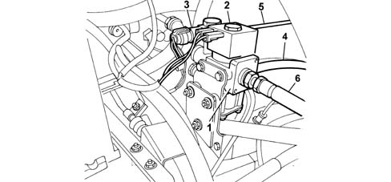
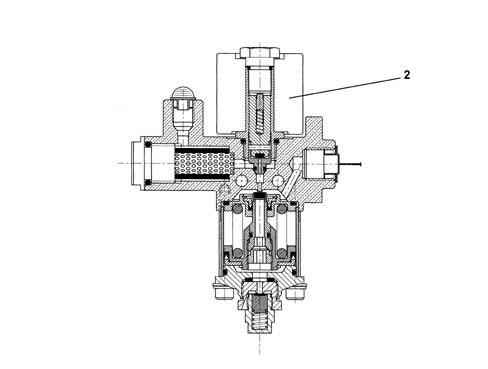
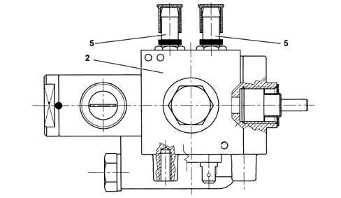

METHANE PRESSURE REDUCTION UNIT
- Path
- Descriptions > 10 ENGINE > 1044 FUEL CIRCUIT PUMP/S AND DEVICES > 1044E GAS PRESSURE CONTROL DEVICE > METHANE PRESSURE REDUCTION UNIT
- Kind
- system description
- Applies to
- engines: 2.0 16V; all production periods; only with equipment: Methane
- Interactive page
- https://sloeber94.github.io/elrnDB-fDct/en/#/244000397
Applies to: engines: 2.0 16V; all production periods; only with equipment: Methane
CONSTRUCTION SPECIFICATIONS

Pressure reduction unit operation

